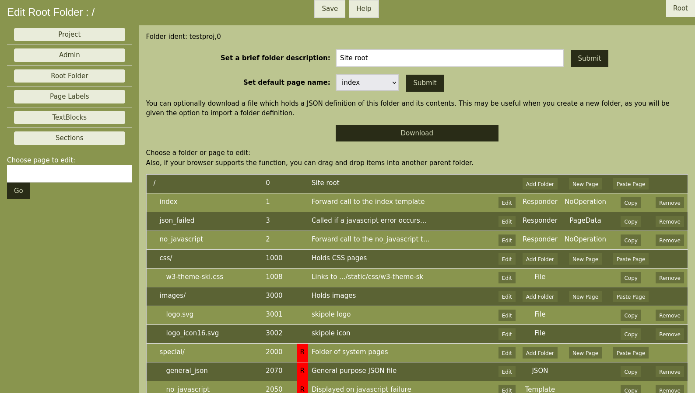

Skipole WSGI generator.
Skipole WSGI generator.
 Skipole WSGI generator.
Skipole WSGI generator.
The project root is normally the first point to be edited.
This shows the root of the site, and the sub folders and responder and template pages within it. The folders and pages can be edited, and new ones added. Where a folder is set as 'R' restricted, it's contents cannot be directly accessed by a call from a client browser. Typically a responder page will be called, which in turn calls your Python functions, and it then passes the call to a template page - which is usually in a restricted folder.
Therefore you would add responders and template pages to build your site.
You could also add 'File' pages - which link to static files on your server, and are useful to serve static CSS files which do not need to be dynamically built.
The above screenshot also shows a 'JSON' page. Your Python code can populate an empty JSON file with widget fields and values, since it is common to use an empty JSON file as a responder target, an empty one is provided with label 'general_json' and can be used for this purpose.
Different types of responder can be set into the project, sometimes a 'NoOperation' responder is used - this does nothing more than pass the call on to a target template page, however it can be removed and replaced with a more useful responder later - so it's chief use is to act as an place holder for future development.
The full definition of the project is held in a JSON file, the part holding the root folder and contents can be downloaded here, and stored by yourself as a JSON file which can be reused in other projects if required.
The second column of the table shown above shows the page ident number. Each page has an ident (project, number) however in most cases just the number is required, the project name being implied. To avoid linking to pages by an uninformative number, 'labels' can be defined, mapping a string to the ident, these are set in the 'Page Labels' area. The label is unique to the project, and can be different to the page 'name' which is shown in the first colum, and makes up the URL path of the page.